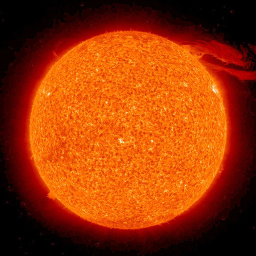
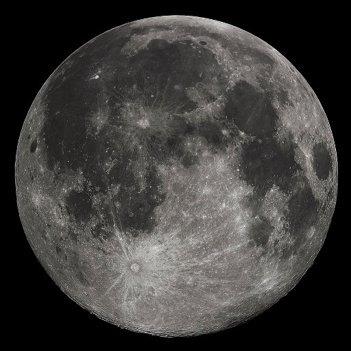
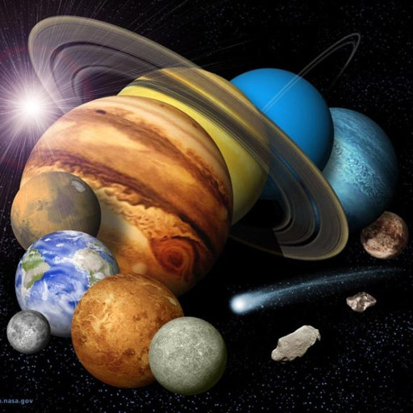
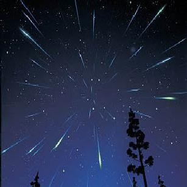

Events
Here are some astronomical events related to the bodies in our solar system that you can easily observe.

Sun
The eclipses are among the easiest astronomical events to observe.

Moon
With its proximity to the earth and constant phases the moon is a great place to start.

Planets
Many of the planets can be seen with the naked eye, especially if you know where and when to find them.

Meteor Showers
Some meteor showers are an annual occurrence and really don't require much more than patience.